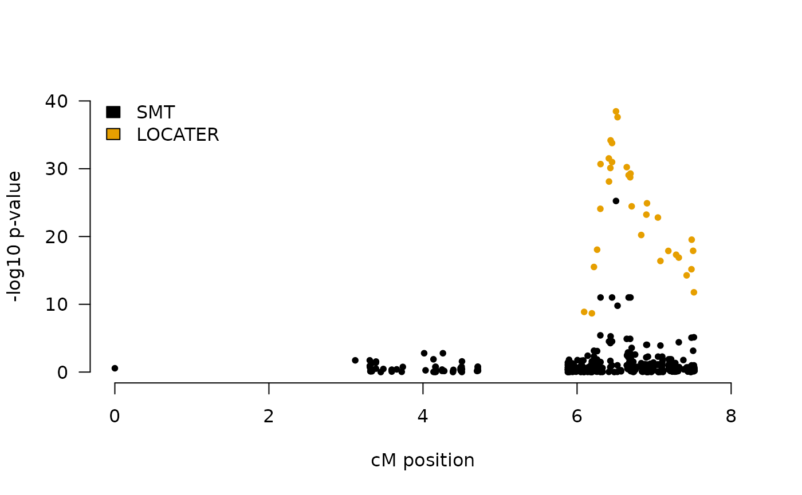
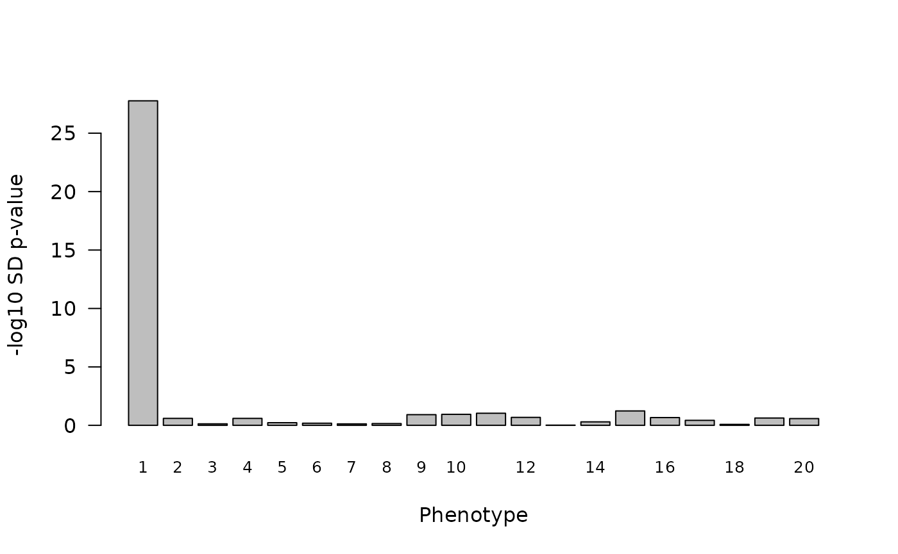
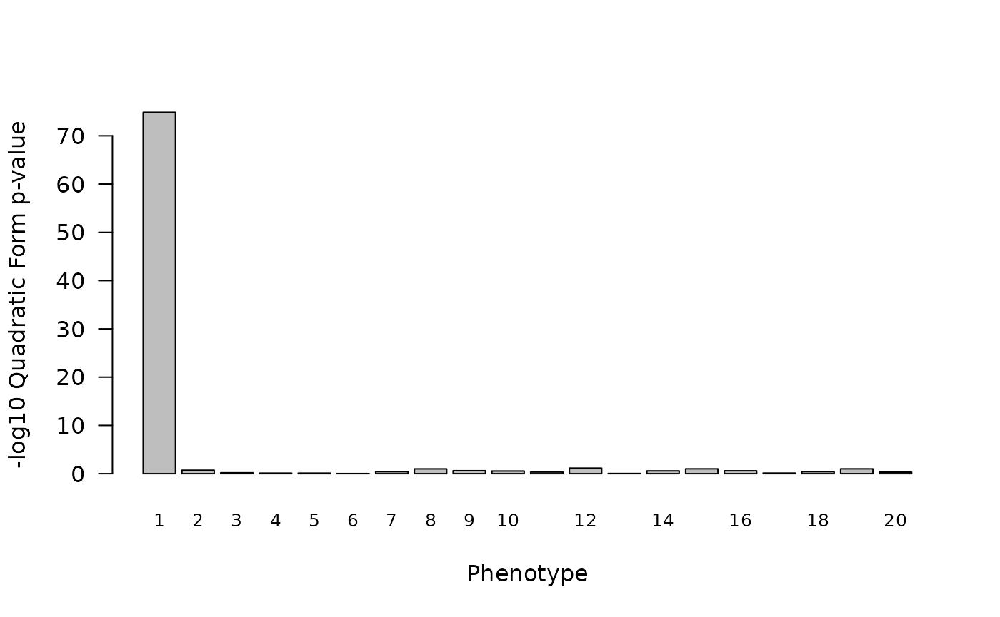
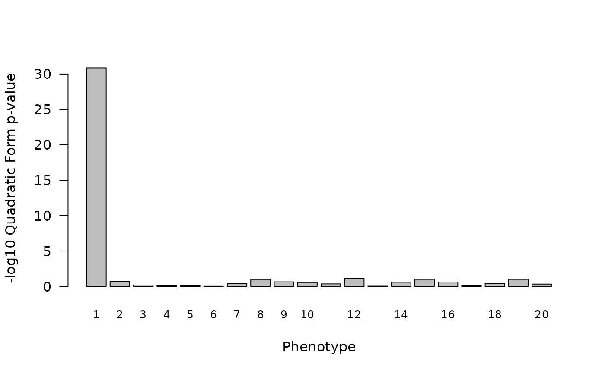

Simple LOCATER Example
simple_gwas_example.RmdThis simple vignette runs LOCATER, with an API implemented in our
R package locater, on a toy example.
In the first section, we run a simple ancestry-based association test
with our a wrapper function TestLoci, which uses
kalis as the underlying ancestry inference engine. We take
a toy data set with 300 simulated haplotypes (150 samples) observed
across 400 loci using 20 simulated quantitative phenotypes where the
first phenotype is driven by 4 causal variants. The other 19 simulated
phenotypes are “null”: their mean is not a function of any of the
simulated genotypes. We then plot the results in a local hit-plot.
We then proceed in the second section to expose more of the
locater package API which allows users to pass clade
genotypes and local relatedness matrices inferred using their ancestry
inference engine of choice to locater testing functions. We
use this provide a simple demonstration of how locater may
be easily used to test output from any ancestry inference engine.
set.seed(7)
library(locater)
library(kalis)
#>
#> Running in 64-bit mode using x86-64 architecture.
#> Loops unrolled to depth 4.
#>
#> Currently not using any special instruction sets (WARNING: poor performance likely).
#> If this is unexpected (e.g. your CPU is Intel Haswell or newer architecture, or ARMv7+ with NEON support), then ensure that you are targeting the native architecture in compilation. The easiest method is to add/change the following line in ~/.R/Makevars
#> CFLAGS=-march=native -mtune=native -O3Boosting SMT results with local ancestry inference: running kalis
and LOCATER together with easy wrapper function
TestLoci
We start by loading the haplotypes corresponding to our genomic segment of interest.
# Load simulated haplotypes and recombination map
CacheHaplotypes(SmallHaps)
map <- SmallMapHere we simulate a simple quantitative trait driven by four causal variants.
# Simulate 20 Phenotypes where only the first is driven by local causal variants
n <- N()/2 # number of samples
m <- 20 # number of phenotypes
y <- matrix(rnorm(n*m),n,m)
g <- QueryCache(c(204,205,207,210)) # c(204,205,207) are indices of causal loci
g <- g[,seq(1,N(),2)] + g[,seq(2,N(),2)]
y[,1] <- y[,1] + colSums((g)*c(150,10,30,100)#c(150,8,20)
/rowSums(g))
A <- matrix(1,n,1) # background covariate matrix is just an index hereNow we determine target variants based on initial SMT results.
# Determine target loci based on SMT
smt.res <- TestCachedMarkers(y, A = A)
target.loci <- FindTargetVars(map, min.cM = 0.1, initial.targets = smt.res, smt.thresh = 3)We iterate LOCATER over the target loci.
# Specify kalis parameters
pars <- Parameters(CalcRho(diff(map),s = 0.0001),mu = 1e-16) # specify HMM parameters
# Specify a list of optional arguments to control exactly how locater tests each position. If more than one combination of testing parameters is desired, a data.frame with multiple rows can be given and locater will efficiently evaluate all testing options.
test.opts <- data.frame("max.k" = 128)
#set.seed(53)
res <- TestLoci(y, pars, target.loci = target.loci, test.opts = test.opts)Then we plot our results and compare to a SMT in a local Manhattan plot.
smt.p1 <- smt.res[,1]
res.p1 <- res[phenotype==1,c("locus.idx","tot")]
COLORS <- palette.colors(3)
plot(0,0, type = "n",
ylim=range(pretty(c(0,max(c(smt.p1,res.p1$tot),na.rm=T)))),
xlim = range(pretty(map)),
las=1,bty="n",
ylab = "-log10 p-value", xlab = "cM position")
points(map,smt.p1,col=COLORS[1],pch=20)
points(map[res.p1$locus.idx],res.p1$tot,col=COLORS[2],pch=20)
legend("topleft",legend = c("SMT","LOCATER"),
fill = COLORS, bty = "n")
Using other ancestry inference engines
The locater package API exposes all of the sub-routines
needed to for running LOCATER in combination with any ancestry inference
engine. The TestLoci function in the locater
package includes the following function calls.
Testing inferred discrete clade genotypes
Building on our example above, we can test inferred discrete clade
genotypes with Stable Distillation with a call to the
distill_pivot_par function. Let y be a
n \times m matrix of phenotypes, x be a
n \times p matrix of predictors (inferred clade genotypes),
and Q be the matrix from the QR decomposition of the
n \times q background covariate matrix A = QR.
By default, we request that the Renyi Outlier Test search for at most 16
distinct active predictors among the colums of x. Below we
start by simulating a set of inferred clade genotypes in order to run
the procedure, but we assume that those would come from an ancestry
inference engine. Among theose simulated genotypes, we include the 4
genotypes from above (in matrix g) that actually affect the
first phenotype.
p <- 50 # number of inferred genotypes
num_true_causal <- nrow(g)
x <- cbind(t(g),Matrix::sparseMatrix(i = sample.int(n,10*(p-num_true_causal),replace = TRUE),
j = rep(seq_len(p-num_true_causal), each=10),
x = rep(c(rep(1,8),2,2), (p-num_true_causal)),
dims = c(n,p-num_true_causal)))
Q <- qr.Q(qr(A))
sd_res <- distill_pivot_par(y, x, Q, max_num_causal = 16)Below we plot the p-value obtained of running parallelized Stable Distillation for each of our 20 simulated phenotypes as a bar plot.
barplot(-log10(sd_res$p_value),names.arg=1:m,xlab="Phenotype",ylab="-log10 SD p-value",las=1,cex.names=0.8)
Only the first phenotype, the one driven by our simulated causal
variants, has a very significant SD p-value. sd_res will
contain a list with lots of other information alongside m
p-values plotted above. More information about this function is
available on it’s manual page, accessible by typing
?locater::distill_pivot_par into R.
Testing inferred local relatedness matrices
Building on example of testing inferred discrete clade genotypes
above, we can test inferred local relatedness matrices with the
TestCladeMat function in the locater package.
We assume that we have a inferred local relatedness matrix
M returned by some ancestry inference engine. Here, we just
construct a simple M from the genotypes simulated for our
Stable Distillation example above. Note, M must be passed
to TestCladeMat as a base R
matrix. As above, we account for the background covaraites
via Q. The argument k specifies the maximum
number of eigenvalues of (I-QQ')M(I-QQ') that we will
budget in hopes of gaining precise p-value estimates.
TestCladeMat allows for much finer control of this process;
please see the documentation by typing
?locater::TestCladeMat into R for more
details. Here we start by setting k=0 which means
TestCladeMat will just return the Satterthwaite
p-values.
M <- as.matrix(tcrossprod(x))
q_res <- TestCladeMat(y, M, Q, k = 0)TestCladeMat returns a data.frame with
m rows where row i corresponds to the results
for phenotype y[,i]. As above, we can plot the
p-values returned by our quadratic form testing procedure. Again, we see
an association with the first (non-null) phenotype.
barplot(q_res$qform,names.arg=1:m,xlab="Phenotype",ylab="-log10 Quadratic Form p-value",las=1,cex.names=0.8)
However, these p-value estimates are not precise/reliable due to the use
of the Satterthwaite approximation for the null distribution.
TestCladeMat warns of this fact in the returned results by
setting precise=FALSE .
print(q_res[1:5,])
#> qform obs obs.T precise exit.status
#> 1 74.8638206 12024.8522 NA FALSE 0
#> 2 0.7115142 1021.7774 NA FALSE 0
#> 3 0.1840489 746.9028 NA FALSE 0
#> 4 0.1064964 674.4044 NA FALSE 0
#> 5 0.1059957 673.8431 NA FALSE 0So we may have used this crude approximation in a first pass screen
through the genome. In order to obtain reliable estimates using the
novel tail approximation approaches proposed in our paper, we can test
this locus again, allowing for up to k eigenvalues to be
evaluated.
q_res_precise <- TestCladeMat(y, M, Q, k = 10)Plotting these results, we see a significant but much more modest p-value estimate associated with the first phenotype.
barplot(q_res_precise$qform,names.arg=1:m,xlab="Phenotype",ylab="-log10 Quadratic Form p-value",las=1,cex.names=0.8)
Printing, the results, we see that TestCladeMat says
these results/p-values are reliable (precise = TRUE).
print(q_res_precise[1:5,])
#> qform obs obs.T precise exit.status
#> 1 30.8803872 12024.8522 NA TRUE 0
#> 2 0.7335176 1021.7774 NA TRUE 0
#> 3 0.1895087 746.9028 NA TRUE 0
#> 4 0.1047127 674.4044 NA TRUE 0
#> 5 0.1041659 673.8431 NA TRUE 0We see that the precise association signal for phenotype 1 found here
by quadratic form testing is now about as strong as the one observed
using Stable Distillation. Note, the number of null genotypes we
simulated here is small: we set p=ncol(x)=50. If we were to
consider a relatedness matrix with many more clades, we would see the
signal found by quadratic form testing drop much more quickly than the
signal found via Stable Distillation (which is much for robust to the
inclusion of null predictors/genotypes).